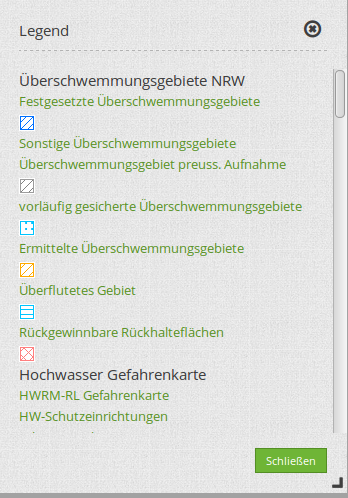
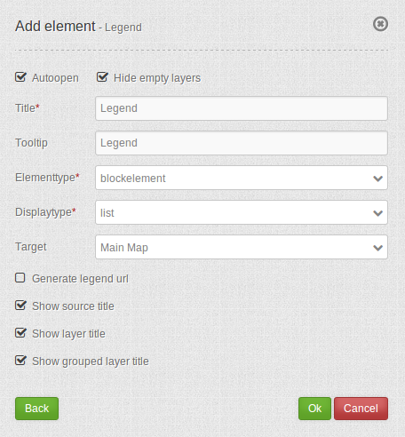

Legend¶
The legend object shows the legend of the layers that are displayed in the map.
{kind=link}
Configuration¶
{kind=link}
- Autoopen: open when application is started, default is true.
- Hide empty layers: hide when no legend is available, default is true.
- Title: Title of the element. The title will be listed in “Layouts”.
- Tooltip: Text, that will be indicated if the mouse hovers over the legend for a longer time.
- Elementtype: dialog/blockelement, default is dialog.
- Target: Id of Map element to query.
- Generate legend url: generate GetLegendGraphic-Url if the operation GetLegendGraphic is supported, default is false.
- Show source title: show WMS/ source title, default is true.
- Show layer title: show layer title, default is true.
- Show grouped layer title: show group title for grouped layers, default is true.
YAML-Definition:¶
tooltip: 'Legend' # text to use as tooltip
elementType: dialog # dialog/blockelement, default is dialog
autoOpen: true # true/false open when application is started, default is true
displayType: list # accordion/list type of display, default is list
target: ~ # Id of Map element to query
hideEmptyLayer: true # true/false hide when no legend is available, default is true
generateGetLegendGraphicUrl: false # true/false generate GetLegendGraphic-Url if the operation GetLegendGraphic is supported, default is false
showWmsTitle: true # true/false show WMS title, default is true
showLayerTitle: true # true/false show layer title, default is true
showGroupedLayerTitle: true # true/false show group title for grouped layers, default is true
You can optionally use a button to show this element. See Button for inherited configuration options. You also can define the layertree with type element. Then you can display the layertree in a frame like the sidebar.
Class, Widget & Style¶
- Class: Mapbender\CoreBundle\Element\Legend
- Widget: mapbender.element.legend.js
- Style: mapbender.element.legend.css
HTTP Callbacks¶
None.
JavaScript Signals¶
None.